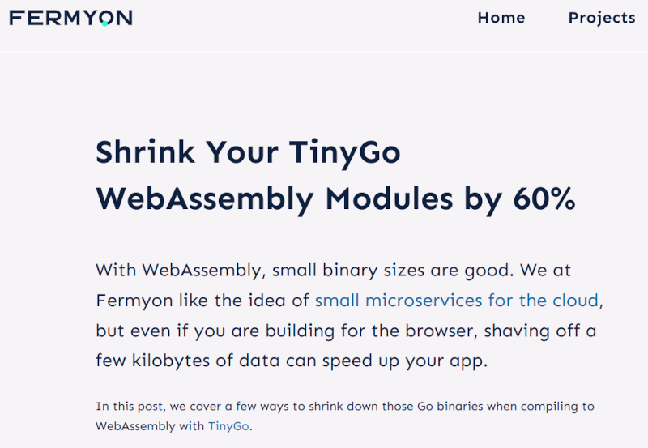
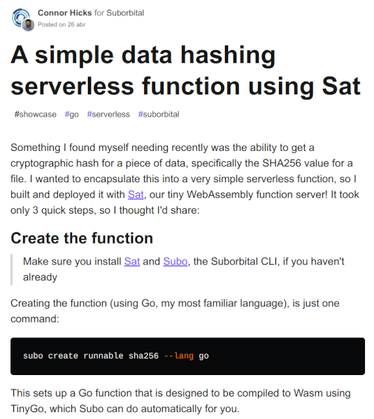
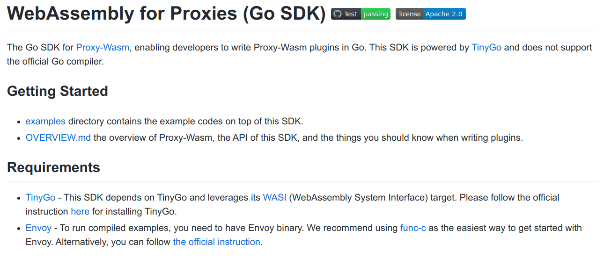
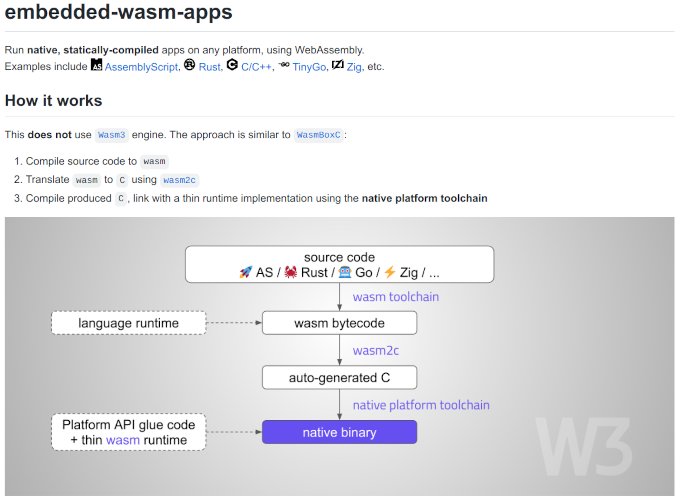
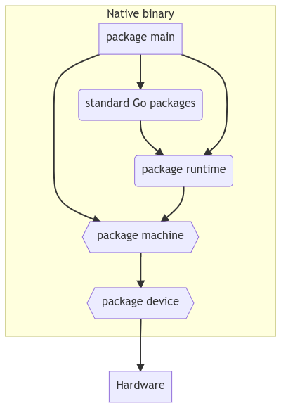
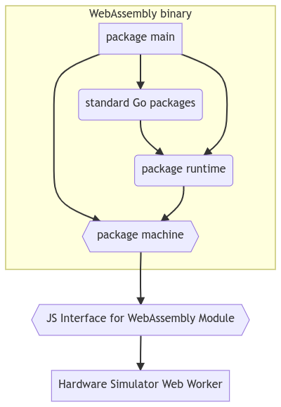
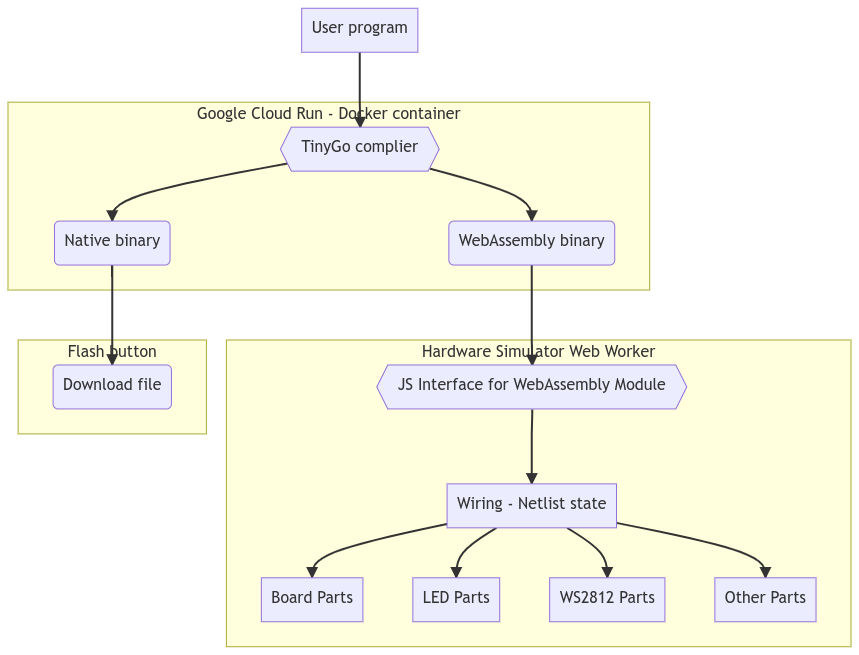

From Hardware Simulation to Real Devices with WebAssembly Using TinyGo
CNCF WASM Day 2022
Ron Evans - @deadprogram
Ron Evans (@deadprogram)
Technologist For Hire
hybridgroup.com
tinygo.org
Go compiler for small places
Microcontrollers
WebAssembly
Size comparison here
package main
func main() {
println("Hello, world.")
}
TinyGo out in the wild world of WASM

www.fermyon.com/blog/optimizing-tinygo-wasm

www.wasm.builders/suborbital/a-simple-data-hashing-serverless-function-using-sat-3fn0

github.com/tetratelabs/proxy-wasm-go-sdk

github.com/wasm3/embedded-wasm-apps
www.packtpub.com/product/creative-diy-microcontroller-projects-with-tinygo-and-webassembly/9781800560208
k33g.gumroad.com/l/wasmcooking
This talk is about Simulating Hardware using wasm
TinyGo Playground
play.tinygo.org
Compile and execute TinyGo code in the cloud
Arduino Uno
Blink

TinyGo on Hardware Running Native Binary
tinygo build -target=arduino -o=/tmp/blink.hex blink.go

TinyGo in Playground Running WebAssembly binary
tinygo build -tags=arduino -opt=1 -no-debug -o=/tmp/module.wasm blink.go
Adafruit Circuit Playground Express
Blink
